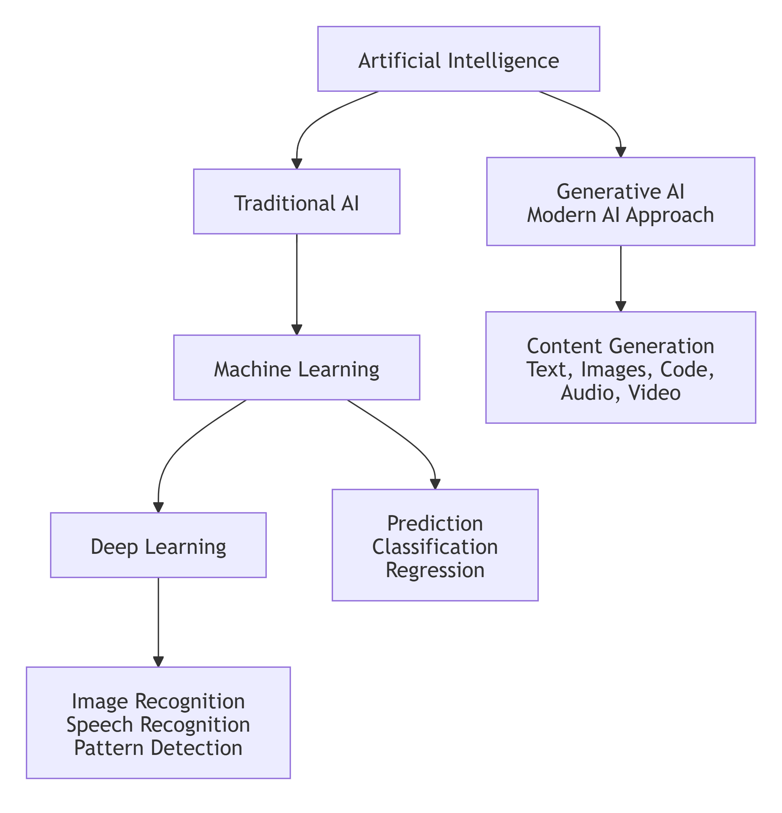

Generative AI is a branch of Artificial Intelligence that can create new content such as text, images, code, audio, and more.
Unlike traditional systems that only classify or predict, generative models learn patterns from large datasets and produce new outputs based on prompts.
Popular examples include chat assistants, code copilots, image generators, and document summarization tools. In industry, GenAI helps teams automate repetitive writing, improve customer support, speed up development, and build personalized user experiences.
ML and DL are traditional AI approaches, while Generative AI is a modern AI approach.

Machine Learning (ML): ML is a branch of Artificial Intelligence where computers learn from data and experience without being explicitly programmed.
Example: Netflix movie recommendation.
Deep Learning (DL): A deep learning model is a computer program designed to think and learn like the human brain.
It works by passing information through layers of artificial neurons to find patterns in data. As it sees more examples, it improves at tasks like recognizing faces, translating languages, or enabling self-driving systems.
Example: Face unlock system in mobile phones.
Generative AI (Gen AI): ChatGPT, Google Gemini, and Claude are examples of Gen AI.
Gen AI creates new content such as text, images, videos, music, or code by learning patterns from existing data. It does not just analyze data, it generates something new.
AI is man made thinking power. AI tools don't literally think like humans. Instead, they use LLMs (Large Language Models), which act like a "brain" for processing language and patterns. LLM doesn't have consciousness or emotions; it's a statical system trained on huge amounts of text data.
The LLM is the core engine that powers an AI tool. LLMs learn by analyzing patterns in the massive datasets. They don't memorize exact answers but predict the most likely response based patterns.
Analogy:
If you go to a restaurant and always order Coke and fries, after a few days the waiter will anticipate your order. Similarly, an LLM predicts what you're likely to want based on past patterns in data.
But remember: the waiter uses memory and human intuition, while an LLM uses probability and statistics.
In short:
AI tools use LLMs as their brain, which learn from huge datasets to recognize patterns and generate predictions. Different version (GPT-4, GPT-5, Gemini, etc.) are just upgrades or improved brains with more advanced capabilities.
E.g.
ChatGPT is a tool using GPT LLM (Version GPT5.5) developed by OpenAI.
Gemini is a tool using pro/flash LLM developed by Google DeepMind.
Claude is a tool using Opus/Sonnet/Haiku LLM developed by Anthropic.
Copilot is a tool using GPT LLM developed by Microsoft
Other common model types:
LIM (Large Image Model): Generates images. Example: image generation models.
LVM (Large Vision Model): Works with video and image understanding/generation. Example: Google Veo.
LAM (Large Audio Model): Generates or processes audio.
Most text-based GenAI applications are powered by Large Language Models (LLMs). These models are trained on huge amounts of text and learn statistical relationships between words and tokens. When you provide a prompt, the model predicts the most likely next token repeatedly to generate a complete response.
Core ideas you will use throughout this course:
Prompts: instructions and context given to the model
Context window: how much information the model can use at once
Temperature: controls creativity vs consistency
RAG: adding external knowledge to improve factual responses
Customer support chatbots with company-specific knowledge
Document Q&A for PDFs, policies, and internal wikis
Code generation and code explanation
Marketing content drafting and editing
Data extraction and structured output from unstructured text
GenAI is powerful, but it can also produce incorrect or biased outputs. Always validate responses, avoid sharing sensitive data in prompts, and design guardrails for production apps.
Hallucination: AI gives an answer that looks correct, sounds confident, but is actually wrong or not verified. You can reduce this by asking source of info and improve prompt vague.
In upcoming lessons, you will learn practical techniques to reduce hallucinations and improve reliability using prompt patterns, retrieval grounding, and evaluation checks.